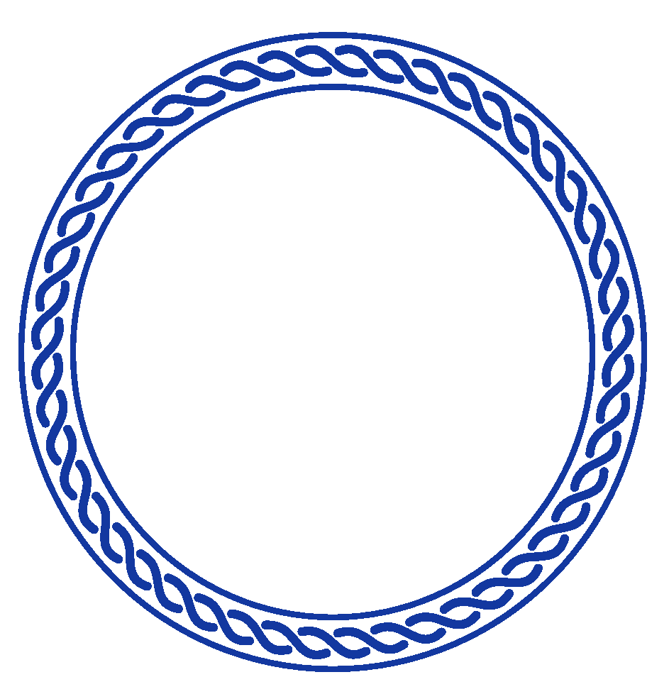

<!doctype html>
<html><head><meta charset="utf-8">
<style>html,body{margin:0;padding:0;background:transparent;overflow:hidden}svg{display:block}</style>
</head><body>
<script>
// プレイヤーのHUDの画像を描く(MakeHudParts.ps1 が ?part=〜 で開いて撮る)
// 座標は設計解像度(1280x720)の値。PlayerHUD.cpp の定数と合わせること
const part=new URLSearchParams(location.search).get("part")||"frame";

const CX=90, CY=90, R=86, A0=-Math.PI*0.62, AE=-Math.PI*0.12, X1=590;
const EY=CY+R*Math.sin(AE), EX=CX+R*Math.cos(AE);
const pol=(r,a)=>[CX+r*Math.cos(a),CY+r*Math.sin(a)];
const arcD=(r,a0,a1)=>{const p0=pol(r,a0),p1=pol(r,a1);return `M${p0} A${r} ${r} 0 0 1 ${p1}`};
const FULL=`${arcD(R,A0,AE)} L${X1} ${EY}`;

// スキル
const SX=EX+4, SY=EY+12, SW=254, SH=8, SL=5;
const SKTR=SX+SL+SW;
const band=(a,b,dy=0)=>[[SX+SL+SW*a,SY-dy],[SX+SL+SW*b,SY-dy],[SX+SW*b,SY+SH+dy],[SX+SW*a,SY+SH+dy]];
const poly=(a,attr)=>`<polygon points="${a.map(p=>p.join(",")).join(" ")}" ${attr}/>`;

// 紐・房の赤はHPの赤(c2)とそろえる
const BK="#060406", SLV="#c8ced8", CORD="#dc3a48", CORD_L="#ff9aa4";
// HPの中身の色(暗い縁・中・上のつや)。?hp=暗,中,明(#なし)で変えられる
const hpq=(new URLSearchParams(location.search).get("hp")||"8a1a24,dc3a48,ff9aa4").split(",").map(c=>"#"+c);
const [HP_D,HP_M,HP_H]=hpq;
const defs=`<defs>
<linearGradient id="silver" x1="0" y1="0" x2="0" y2="1"><stop offset="0" stop-color="#ffffff"/><stop offset=".45" stop-color="#b8c4d8"/><stop offset=".55" stop-color="#5a6478"/><stop offset="1" stop-color="#dce4f0"/></linearGradient>
<linearGradient id="sk" x1="0" y1="0" x2="0" y2="1"><stop offset="0" stop-color="#ffffff"/><stop offset=".35" stop-color="#d8dce4"/><stop offset="1" stop-color="#6a7080"/></linearGradient>
<filter id="ds" x="-30%" y="-30%" width="160%" height="160%"><feDropShadow dx="1.6" dy="2.4" stdDeviation="0.4" flood-color="#000" flood-opacity=".6"/></filter>
</defs>`;

function kojiri(x,y,h=11){
  return `<path d="M${x-6} ${y-h} L${x+6} ${y-h} Q${x+16} ${y-h} ${x+16} ${y} Q${x+16} ${y+h} ${x+6} ${y+h} L${x-6} ${y+h} Z" fill="url(#silver)" stroke="${BK}" stroke-width="2.2"/>`+
    `<path d="M${x+1} ${y-h+2} Q${x+5} ${y} ${x+1} ${y+h-2}" fill="none" stroke="#6a7080" stroke-width="1.2"/><line x1="${x-6}" y1="${y-h}" x2="${x-6}" y2="${y+h}" stroke="${BK}" stroke-width="1.4"/>`;
}
// 左端(弧の始まり)の鯉口の金具。道の向きに回して描く(x=進む向き、0が端)
function koiguchi(){
  const [x,y]=pol(R,A0), deg=Math.atan2(Math.cos(A0),-Math.sin(A0))*180/Math.PI;
  return `<g transform="translate(${x} ${y}) rotate(${deg})">`+
    `<path d="M-6 -13.5 Q-8.5 -13.5 -8.5 -11 L-8.5 11 Q-8.5 13.5 -6 13.5 L-3 13.5 L-3 -13.5 Z" fill="url(#silver)" stroke="${BK}" stroke-width="2.2"/>`+
    `<path d="M-3 -12 L5 -12 L5 12 L-3 12 Z" fill="url(#silver)" stroke="${BK}" stroke-width="2.2"/>`+
    `<line x1="1" y1="-12" x2="1" y2="12" stroke="#6a7080" stroke-width="1.2"/>`+
    `<line x1="-5.6" y1="-11" x2="-5.6" y2="11" stroke="#fff" stroke-width="1" opacity=".6"/></g>`;
}
function wrapBand(x0,x1){let s="";for(let x=x0;x<x1;x+=4.2)s+=`<line x1="${x+3}" y1="${EY-9}" x2="${x}" y2="${EY+9}" stroke="${BK}" stroke-width="4.2"/><line x1="${x+3}" y1="${EY-9}" x2="${x}" y2="${EY+9}" stroke="${CORD}" stroke-width="2.4"/><line x1="${x+2.6}" y1="${EY-7}" x2="${x+1.6}" y2="${EY-1}" stroke="${CORD_L}" stroke-width="1"/>`;return s;}
function mekugi(){const x=SKTR+3,y=SY+4;
  return `<circle cx="${x}" cy="${y}" r="6.2" fill="${BK}"/><circle cx="${x}" cy="${y}" r="4.6" fill="url(#silver)"/><circle cx="${x}" cy="${y}" r="2" fill="${CORD}"/><circle cx="${x-1.4}" cy="${y-1.4}" r="1" fill="#fff" opacity=".85"/>`;}

function knotKiku(x,y){let o="",f="";for(let k=0;k<5;k++){const t=k*72-90+8,r=t*Math.PI/180,ex=x+Math.cos(r)*4.2,ey=y+Math.sin(r)*4.2;
  o+=`<ellipse cx="${ex}" cy="${ey}" rx="3.6" ry="2.4" transform="rotate(${t} ${ex} ${ey})" fill="${BK}" stroke="${BK}" stroke-width="2.4"/>`;
  f+=`<ellipse cx="${ex}" cy="${ey}" rx="3.6" ry="2.4" transform="rotate(${t} ${ex} ${ey})" fill="${k%2?CORD:CORD_L}"/>`;}
  return o+f+`<circle cx="${x}" cy="${y}" r="2.2" fill="${SLV}" stroke="${BK}" stroke-width="1"/>`;}
const braid=(d,w=2.6)=>`<path d="${d}" fill="none" stroke="${BK}" stroke-width="${w+2.4}" stroke-linecap="round"/><path d="${d}" fill="none" stroke="${CORD}" stroke-width="${w}" stroke-linecap="round"/><path d="${d}" fill="none" stroke="${CORD_L}" stroke-width="${w*0.55}" stroke-dasharray="1.6 2.2"/>`;

// 1024x256 の画像に、設計座標の x 0〜640・y -16〜144 を描く(1.6倍)
let w=1024,h=256,vb="0 -16 640 160",body="";
if(part==="frame"){
  body+=`<path d="${FULL}" fill="none" stroke="#040204" stroke-width="22"/><path d="${FULL}" fill="none" stroke="#a8b0bc" stroke-width="18"/><path d="${FULL}" fill="none" stroke="#060406" stroke-width="15"/><path d="${FULL}" fill="none" stroke="#160a0c" stroke-width="12"/>`;
  body+=poly([[SX+SL-3,SY-3],[SX+SL+SW+5,SY-3],[SX+SW+2,SY+SH+3],[SX-6,SY+SH+3]],`fill="url(#silver)"`);
  body+=poly([[SX+SL-1.5,SY-1.5],[SX+SL+SW+3,SY-1.5],[SX+SW+0.5,SY+SH+1.5],[SX-4,SY+SH+1.5]],`fill="${BK}"`);
  body+=poly(band(0,1),`fill="#160a0c"`);
  body+=`<g filter="url(#ds)">${koiguchi()}${kojiri(X1,EY)}${wrapBand(X1-18,X1-6)}${mekugi()}</g>`;
}else if(part==="fill"){
  body+=`<path d="${FULL}" fill="none" stroke="${HP_D}" stroke-width="12"/>`;
  body+=`<path d="${FULL}" fill="none" stroke="${HP_M}" stroke-width="7.44" transform="translate(0 -0.8)"/>`;
  body+=`<path d="${FULL}" fill="none" stroke="${HP_H}" stroke-width="2.4" transform="translate(0 -2.4)" opacity=".9"/>`;
  body+=`<path d="${FULL}" fill="none" stroke="${SLV}" stroke-width="1.4"/>`;
  body+=poly(band(0,1),`fill="url(#sk)"`);
  body+=poly([[SX+SL+1,SY+1],[SX+SL+SW-1,SY+1],[SX+SL+SW-1.2,SY+2.4],[SX+SL+0.8,SY+2.4]],`fill="#fff" opacity=".5"`);
}else if(part==="band"){
  body+=`<path d="${FULL}" fill="none" stroke="#fff" stroke-width="12"/>`;
  body+=poly(band(0,1),`fill="#fff"`);
}else if(part==="tassel"){
  // 房の上の部分(紐・菊結び・房頭)。支点(0,0)から下向き。糸はゲームで描く
  w=64;h=96;vb="-16 -4 32 48";
  body+=`<g filter="url(#ds)">${braid("M0 0 L0 12")}${knotKiku(0,17)}`+
    poly([[-2.72,22],[2.72,22],[3.57,29],[-3.57,29]],`fill="${SLV}" stroke="${BK}" stroke-width="1.6"`)+
    `<line x1="-3.06" y1="25.15" x2="3.06" y2="25.15" stroke="#6a7080" stroke-width="1"/></g>`;
}else if(part==="markon"||part==="markoff"){
  // 象嵌の菱形(中心が画像の真ん中。半幅4・半高6＋黒い縁1.2、4倍で描く)。on=HPがある、off=減った
  w=64;h=80;vb="-8 -10 16 20";
  const on=part==="markon";
  const dia=(hw,hh)=>`M0 ${-hh} L${hw} 0 L0 ${hh} L${-hw} 0 Z`;
  body+=`<path d="${dia(5.2,7.2)}" fill="${BK}"/>`;
  body+=`<path d="${dia(4,6)}" fill="${on?"url(#silver)":"#4a4e58"}"/>`;
  body+=`<path d="M0 -6 L4 0 L0 0 Z" fill="#fff" opacity="${on?0.55:0.12}"/>`;
  body+=`<path d="M0 6 L-4 0 L0 0 Z" fill="#000" opacity="${on?0.25:0.3}"/>`;
}
if(part==="ultglow"){
  // 必殺技の縄をぼかした光(UltGaugeColor.png と同じ中心。にじむ分だけ周りを広げている)
  document.body.innerHTML=`<div style="width:1100px;height:1142px;display:flex;align-items:center;justify-content:center">`+
    `</div>`;
}else if(part==="spark"){
  // たまっている先の光(加算で使う)
  document.body.innerHTML=`<div style="width:128px;height:128px;border-radius:50%;background:radial-gradient(circle,#ffffff 0,#dce8ff 10%,#7aa8ff 26%,rgba(58,106,255,.45) 45%,rgba(40,80,255,0) 70%)"></div>`;
}else{
  document.body.innerHTML=`<svg width="${w}" height="${h}" viewBox="${vb}" xmlns="http://www.w3.org/2000/svg">${defs}${body}</svg>`;
}
</script>
</body></html>
